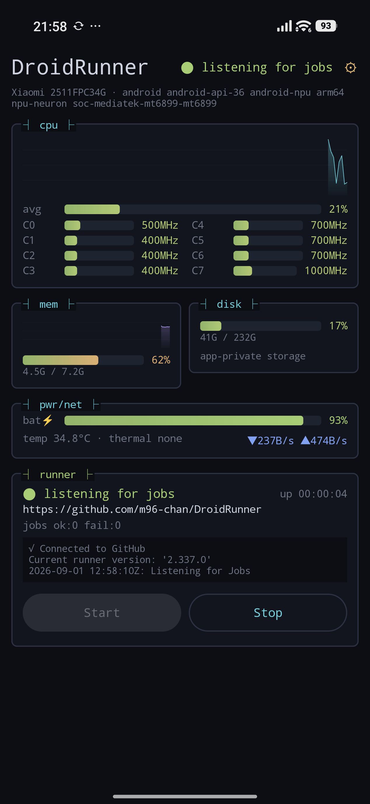

android arm64 android-api-36 soc-mediatek-mt6899 android-npu npu-neuron
Your old phone is an ARM64 Linux machine with an NPU that happens to be sitting in a drawer. DroidRunner makes GitHub Actions treat it as one.
A single APK runs the official GitHub Actions runner on an Android device. No root. No Termux. No PC attached.
GitHub's hosted ARM64 runners are virtual machines. They cannot tell you whether your model actually runs on a Qualcomm Hexagon, a Google Tensor TPU, or a MediaTek APU — because there is no NPU behind them, and no vendor driver stack either.
The devices that can answer that are the ones already in the drawer. DroidRunner's goal is a pool of real phones that CI can dispatch to by label, so "does this build work on ARM64" and "does this model run on that vendor's NPU" become the same kind of question: a job that runs on a push.

GitHub Actions ↓ job dispatched by label ┌─ DroidRunner APK ────────────────────────────────┐ Android controller → Keystore (user token) ↓ PRoot + Ubuntu ARM64 rootfs ↓ Official Linux ARM64 Actions Runner ↓ loopback + per-job capability token Device Agent → NNAPI / QNN / Neuron / ENN └──────────────────────────────────────────────────┘
Shells, Git, Node, Python, Rust, Go and Gradle run inside PRoot like on any Linux box. Anything that needs an Android API or the NPU cannot be reached from inside that namespace, so it is delegated back to the app over a loopback API that only accepts a token minted for the running job.
proot itself ships inside the APK as a native library, because Android 10
and later refuse to exec() a binary out of app data storage. The
downloaded runtime bundle is therefore data only — and its manifest is signed,
so a device will not fetch a rootfs nobody vouched for.
No companion app, no Termux, no scripts to paste.
A Linux ARM64 environment on top of PRoot.
GitHub's own linux-arm64 Actions runner, unmodified.
Device-flow sign-in with a target picker. No PAT to create, no client secret in the APK.
Serve one repository, or every repository in an organization.
Android API level, SoC and NPU hints become runner labels.
Holds jobs while the device is unplugged, low, hot or short on space.
Restarts the listener on its own, with backoff.
Re-registers and wipes the work directory after every job.
ECDSA-signed manifest, verified against keys compiled into the APK.
The GitHub token is encrypted by Android and never enters the Linux side.
Foreground service and wake lock keep the runner alive.
jobs: test: runs-on: [self-hosted, android, arm64] steps: - uses: actions/checkout@v4 - run: uname -a - run: ./ci/test-arm64.sh
Or ask the silicon a question:
runs-on: [self-hosted, android, nnapi-accelerator] steps: - run: droidrunner-device capabilities # device info, thermal, drivers - run: droidrunner-device bench-all # CONV_2D on every driver
DEVICE AVG_US GFLOPS mtk-dsp_shim - compilation_finish mtk-mdla_shim - compilation_finish mtk-neuron_shim 4148.9 4.55 nnapi-reference 1107.7 17.04
The two drivers that refused the job wanted a quantized model, not float32. That is precisely why labels are meant to come from probes rather than from parsing an SoC name.
| Label | Meaning |
|---|---|
android | A physical Android device running DroidRunner |
arm64 | ARM64 device |
android-api-N | Android API level |
soc-* | Detected SoC |
android-npu / android-no-npu | Whether an NPU was detected |
nnapi-accelerator |
An accelerator answered the probe — the label to select on |
npu-qnn |
A model has run on this phone's Hexagon — measured, not guessed |
npu-tflite / npu-neuron / npu-enn |
LiteRT / MediaTek Neuron / Samsung ENN candidate, from the SoC name |
nnapi, nnapi-accelerator and npu-qnn come
from asking the device; the rest are candidates derived from the SoC name.
Select on a measured one when a job needs acceleration, or it may quietly get a
CPU. npu-qnn used to be a guess and is now earned: a Snapdragon
carries it only after a model has been shown to run on its Hexagon.
EfficientNet-Lite0, same model and same harness on three phones. Every row says which processor actually ran it, not which one was asked for.
| device | driver | int8 | float32 |
|---|---|---|---|
| Tensor G4 | google-edgetpu | 0.65 ms | 16.7 ms |
| SM8650 | qnn-htp (Hexagon) | 1.22 ms | 2.78 ms |
| SM8650 | gpu (Adreno, TFLite delegate) | 4.95 ms | — |
| MT6899 | mtk-neuron_shim | 2.12 ms | 7.29 ms |
| MT6899 | mtk-mdla_shim | 2.69 ms | fell back to the CPU |
| Tensor G4 | NNAPI's own choice | 5.65 ms | — |
| SM8650 | nnapi-reference (CPU) | 113 ms | 39.8 ms |
| MT6899 | nnapi-reference (CPU) | 257 ms | 106 ms |
A whole network cannot tell you. One refused node pushes its entire partition back to the CPU, so a fallback says a vendor's table is wrong somewhere without saying where. So: one model per operator per precision, 62 of them, run on every driver the phone exposes.
| driver | float32 | int8 |
|---|---|---|
qnn-htp (SM8650 Hexagon) | 31/31 | 31/31 |
mtk-neuron_shim (MT6899) | 28/31 | 30/31 |
mtk-mdla_shim (MT6899) | 0/31 | 30/31 |
mtk-dsp_shim (MT6899) | 10/31 | 19/31 |
google-edgetpu (Tensor G4) | 0/31 | 29/31 |
Everything marked working has run on a real device, not just in CI. The README carries the detail. blocked means every route was tried and each one needs a library that is absent or not loadable by an app — see issue #83.